Input formatParameter definitions
ALIGnment fitting .....(maximum 80 characters)
nstep nit nvar ncond nfit nopter
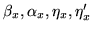
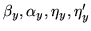
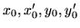
dx dx' dy dy'
nenerfor i from 1 to nener
Origin
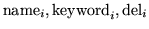 for i from 1 to npar
When nfit equals 1 or 2 the following group applies
CORR
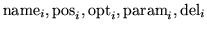 for i from 1 to ncor
NOTE: ncor+npar=nval
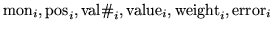 for i from 1 to ncond
End of the group for nfit 1 or 2
If nfit equals 3 the following group applies :
CORR
mcorr
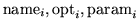 for i from 1 to mcorr
nmon nskip
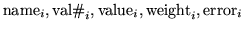) for i from 1 to nmon
end of group for nfit 3
nasp
repeat the following nasp times
name keywd npas
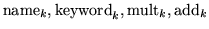 for k from 1 to npas
nstep 
nit 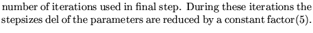
nvar 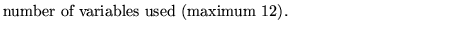
ncond 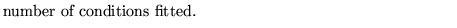
nfit 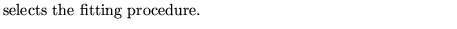
1 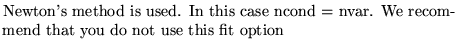
2 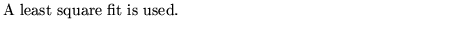
nopter 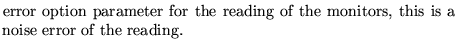
0 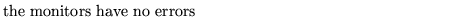
1 
2 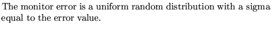
3 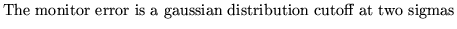
4 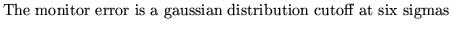
11,12,13,14 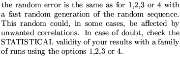
The initial seed used is the same as that defined by the operation SEED. The generation of the random errors for the monitors is, INDEPENDENT of that of the misalignments and of the field errors.

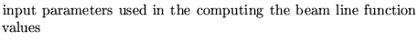
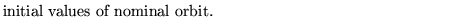
dx dx' dy dy' 
nener 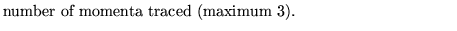
ener 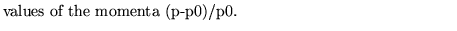
origin 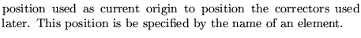
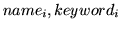 
del 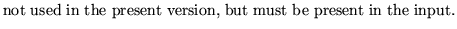
CORR 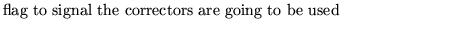
mcor 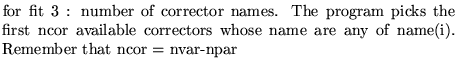
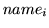 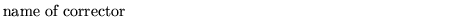
 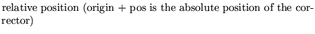
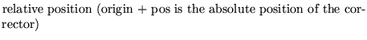
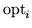 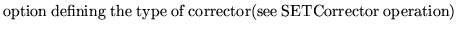
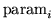 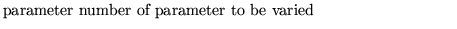
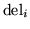 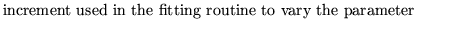
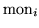 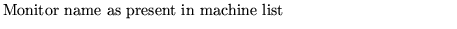
nmon 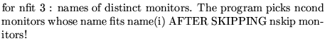
 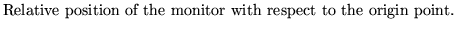
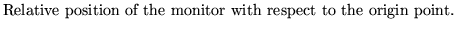
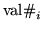 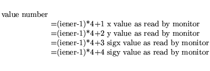
 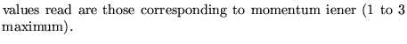
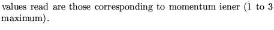
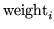 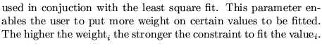
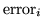 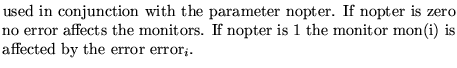
nasp:
name1
keywd
npas 

Examples
The first two examples are taken from demo6.
The third set comes from demo7. Please refer to these demos for their relation with other operations.
* the following is an example of an Alignment fitting with nfit = 3 ALIGNMENT FITTING 0 1 8 8 3 0 3 0 0 0 1 0 0 0 0 0 0 0 0.00001 0.00001 0.00001 0.00001 1 0 MRKC2 CORR 2 HC 0 4 kcv 3 2 2 0 PMC 1 0.0 1.0 20E-06 PMC 2 0.0 1.0 20E-06 0, * the following is an example of an Alignment fitting with nfit = 2 ALIGNMENT FITTING 0 1 6 6 2 0 3 0 0 0 1 0 0 0 0 0 0 0 0.00001 0.00001 0.00001 0.00001 1 0 MRKS1 corr ksv 2 3 2 0.0001 ksv 16 3 2 0.0001 ksv 35 3 2 0.0001 ksh 7 3 1 0.0001 ksh 19 3 1 0.0001 ksh 32 3 1 0.0001 PMs 13 1 0.0 1.0 20E-06 PMs 13 2 0.0 1.0 20E-06 PMs 28 1 0.0 1.0 20E-06 PMs 28 2 0.0 1.0 20E-06 PMs 40 1 0.0 1.0 20E-06 PMs 40 2 0.0 1.0 20E-06 0, * the following is an example of an Alignment fitting with nfit = 2 * and shows how to correct off momentum orbits and beam sigma * values ALIGNMENT CORRECTION FINAL FOCUS ORBIT 0 1 6 6 2 0 49.26950355 0 0 0 22.75617615 0 0 0 0 0 0 0 0.000001 0.000001 0.000001 0.000001 2 0 -0.001 MFIN KORS DXP 0.000001 KORS DYP 0.000001 KETA DXP 0.000001 KETA DYP 0.000001 KORT DXP 0.000001 KORT DYP 0.000001 PMINT 28 1 0.0 1.0 10E-06 PMINT 28 2 0.0 1.0 10E-06 PMINT 31 5 0.0 1.0 10E-06 PMINT 31 6 0.0 1.0 10E-06 PMINT 33 1 0.0 1.0 10E-06 PMINT 33 2 0.0 1.0 10E-06 0, ALIGNMENT CORRECTION FINAL FOCUS SIGMAS 0 2 4 6 2 0 49.26950355 0 0 0 22.75617615 0 0 0 0 0 0 0 0.000001 0.000001 0.000001 0.000001 3 0 -0.003 0.003 MFIN QC1 K1 0.0001 QS1 K1 0.0001 Q3XC K1 0.0001 Q2BA K1 0.0001 PMINT 31 3 1.2E-06 1.0 0.000 PMINT 31 4 1.2E-06 1.0 0.000 PMINT 31 7 1.2E-06 1.0 0.000 PMINT 31 8 1.2E-06 1.0 0.000 PMINT 31 11 1.2E-06 1.0 0.000 PMINT 31 12 1.2E-06 1.0 0.000 0,